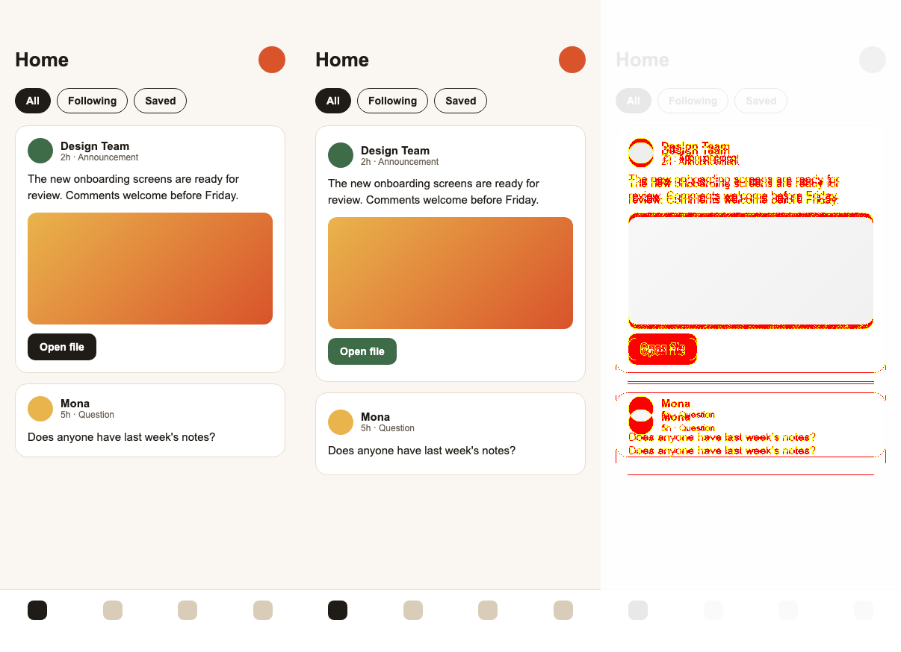

Golden test vs design · real compare.mjs output
The machine finds the drift. You open the image and judge.
The left frame is the captured design reference. The middle one is the build: its card padding is 6 px larger and its button is the wrong colour. The right frame is the diff.

reference (design)golden (implementation)diff
similarity 95.43 %node tool/design/compare.mjs golden.png reference.png
The score is advisoryFonts rasterise differently in a browser and in the app. Healthy screens usually score 93–98 %. You still decide by looking at the diff.
What it caught hereEvery element below the first card shifted down, and the button colour doesn't match the token. Both are structural, so both get fixed.